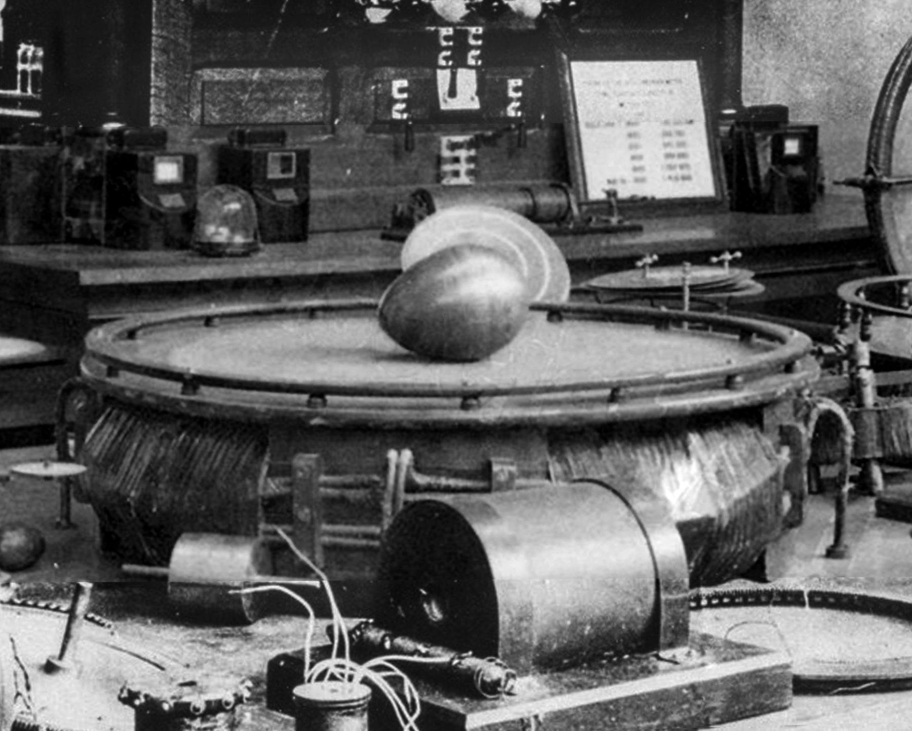
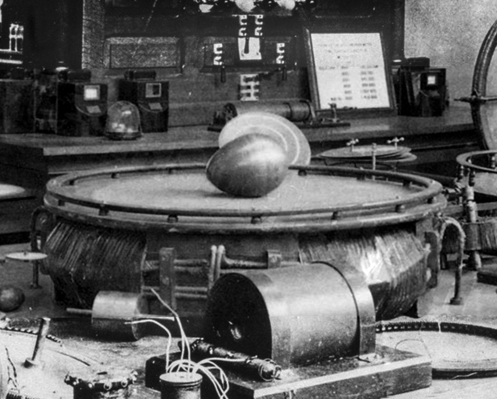

Nikola Tesla
“If you want to find the secrets of the universe, think in terms of energy, frequency and vibration.”

Tesla Sitting in his Colorado Springs labratory with his Tesla Coil generating millions of volts of electricity.
 Height:
1.88 m / 6ft 2in
Favourite Food:
Born:
Potato! (More Info)
10 July 1856
Smiljan, Austrian Empire
(modern-day Croatia)
Death:
7 January 1943 (aged 86)
New York City, United States
Discipline:
Electrical engineering, Mechanical engineering
Height:
1.88 m / 6ft 2in
Favourite Food:
Born:
Potato! (More Info)
10 July 1856
Smiljan, Austrian Empire
(modern-day Croatia)
Death:
7 January 1943 (aged 86)
New York City, United States
Discipline:
Electrical engineering, Mechanical engineering
"The present is theirs; the future, for which I really worked, is mine."
Signature
Notable Inventions, Designs and Discoveries:
1882 Induction Motor
Tesla's, whilst on a walk in 1882, had an Epiphany and came up with the idea of a Brushless AC motor. He sketched a diagram of the motor in the sand, with a stick! He first demonstates this motor in 1883 to a former Mayor in Paris.1885 Arc Lamp
Invented originally by x in 1800, Tesla, whilst working for the Continental Edison Company, designed an arc lamp with automatic adjustment and a fail-safe switch as well as improved dynamos.1891 Tesla Coil
In 1891, Tesla the "Tesla Coil" which is an electricial resonant transformer capable of producing high-voltage, low-current, high frequency AC electric current. Most Tesla coils operate at a high enough frequency that the current does not penetrate the skin, so you won't be shocked, however a large Tesla Coil may have enough current to burn or even kill you.1893 Tesla's Egg of Columbus
During the World's Columbian Exposition of 1893, Tesla used a rotating magnetic field and in a alternating current induction motor to spin a large copper egg until it stood on end, recreating "Egg of Columbus".1893 Neon Lights at the Chicago World's Fair!
Tesla didn't invent the neon light, but he did improve them. Tesla Created the first neon sign at the world fair and had the tubes bent to spell out the names of famous scientists.1894-1895 X-Ray "Shadowgraphs"
In 1894, Tesla invented his own vacuum tube began experimenting with single electrode that emitted electrons. Upon experimentation, Tesla found that he could create "Shadowgraphs" which were actually X-rays. On November 8th 1895 Tesla Published his discovery.1899 Terrestrial Stationary Waves
Tesla said that he discovered "Terrestrial Stationary Waves", as he called it, on July 3rd 1899, standing waves that extended across the earth to the antipode opposite of his transmitter.1899 Rythmic Pulses
In 1899, Tesla noticed some strange rhythmic sounds on his radio receiver in his Colorado Springs laboratory. Tesla concluded it could only alien beings attempting to communicate with Earth!1901 Wardenclyffe Tower
Wardenclyffe, an experimental wireless transmission tower, began construction in 1901 and finished in 1902. The height of the tower was 57m or 187ft. Wardenclyffe served as Telsa's labratory until 1906 finally being demolished due to outstanding debt in 1917. Unfortuently the tower never served its purpose.

 
